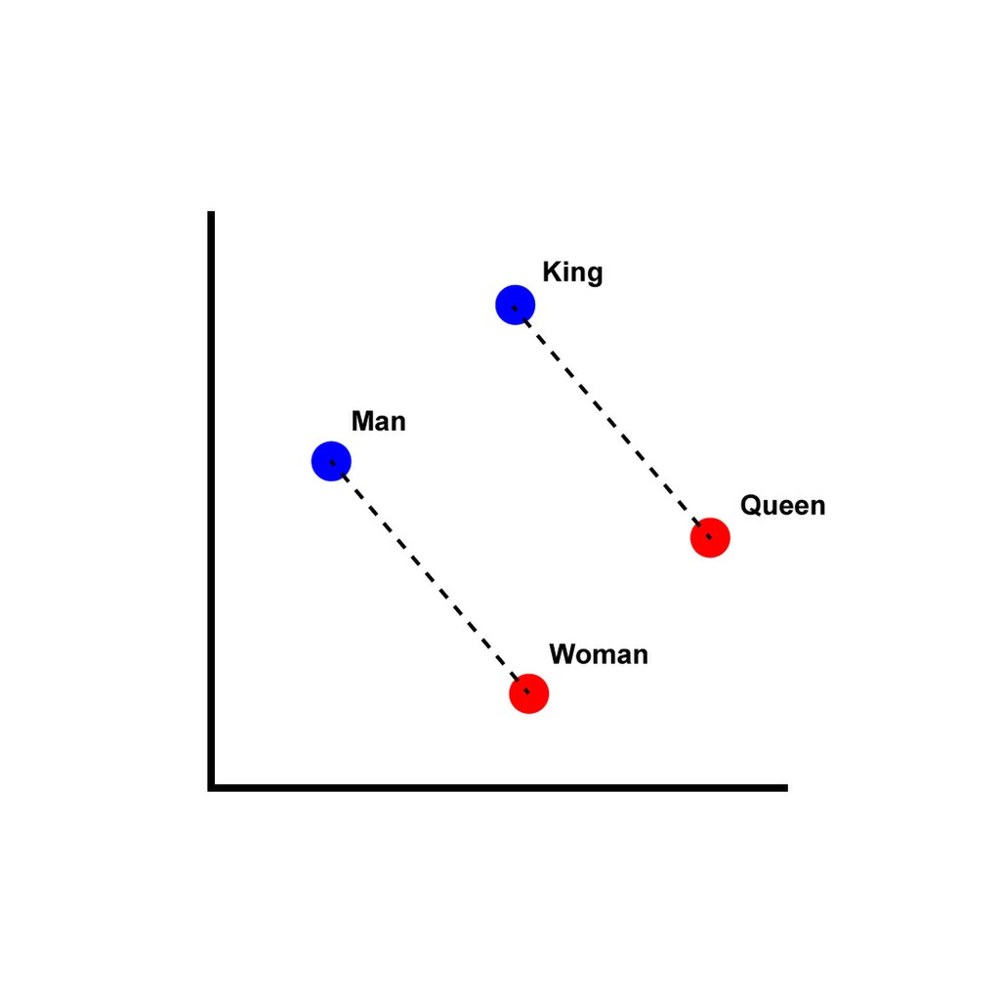

August 2, 2025
NLP transfer learning
Word Embeddings in NLP: An Introduction
https://hunterheidenreich.com/posts/intro-to-word-embeddings/
Distributional semantics
https://en.wikipedia.org/wiki/Distributional_semantics
distributional hypothesis: linguistic items with similar distributions have similar meanings.
word2vec:
Tool for computing continuous distributed representations of words.
https://code.google.com/archive/p/word2vec/
https://www.tensorflow.org/text/tutorials/word2vec
https://en.wikipedia.org/wiki/Word2vec
Preservation of semantic and syntactic relationships:

Get training data by extracting text from Wikipedia
https://mattmahoney.net/dc/textdata.html
Part 9.3: Transfer Learning for NLP with Keras
The code loads an pretrained embedding model as variable model.
Then it creates an embedding layer as a Keras layer with the parameters from this model,
and that has an output shape of 20.
hub_layer = hub.KerasLayer(
model,
output_shape=[20],
input_shape=[],
dtype=tf.string,
trainable=True
)
The embedding layer can convert each of the reviews into a 20 number vector.
For example:
print(hub_layer(train_examples[:1]))
prints
tf.Tensor(
[[
1.7657859 -3.882232 3.913424 -1.5557289 -3.3362343 -1.7357956
-1.9954445 1.298955 5.081597 -1.1041285 -2.0503852 -0.7267516
-0.6567596 0.24436145 -3.7208388 2.0954835 2.2969332 -2.0689783
-2.9489715 -1.1315986
]], shape=(1, 20), dtype=float32)
regardless of how many words the input has.